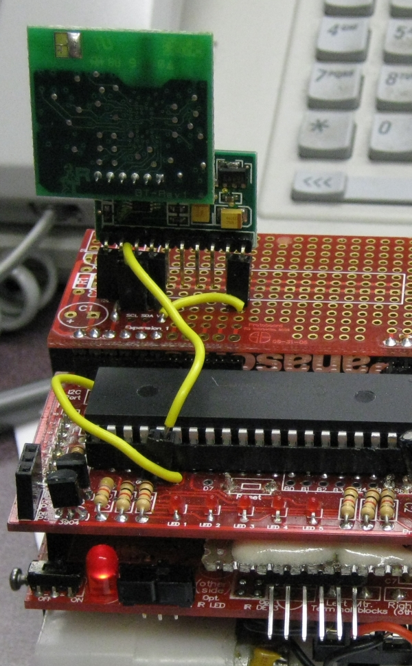

Sept. 2 (moved here on Sept 23) 2010
Initial testing of bluetooth on robot expansion board. Working at 115200 bps with unchanged diagnostic program (v4.002). Required small change to brainboard. Note on home computer was connecting as COM4. The image below is a screenshot from office computer (COM7).To get it to connect needed to do a verify with PICkit2. Reason not yet known. When time permits I will try with newer batteries.
Note that the wheels were removed so the robot would stay put.